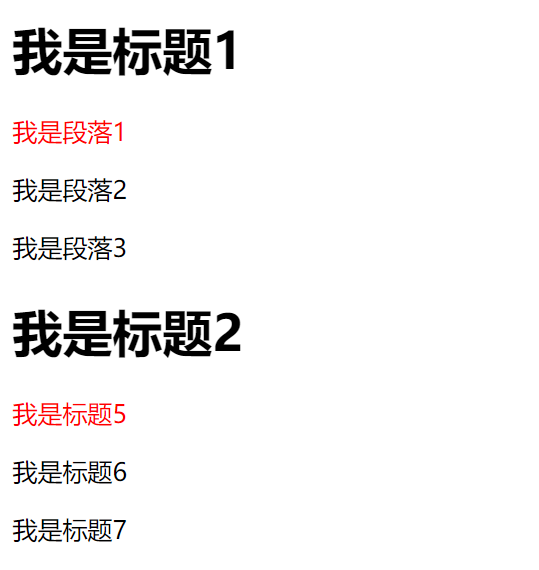
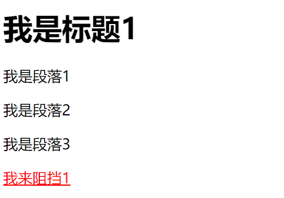
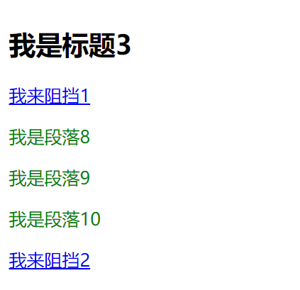

原文出处:本文由博客园博主心悦君兮君不知-睿提供。
原文连接:https://www.cnblogs.com/ruigege0000/p/11144828.html
原文连接:https://www.cnblogs.com/ruigege0000/p/11144828.html
一、并集选择器
1.作用：给所有的选择器选中的标签设置属性。
2.格式：
选择器1，选择器2｛
属性：值；
｝
3.例如：
.abc1,#abc2{
color:red;
}
.......省略代码.......
<p class="abc1">并集1</p>
<p id="abc2">并集2</p>
4.注：支持多个标签取并集，中间用逗号连接就行。上一节中交集选择器也可以取多个交集
二、兄弟选择器
1.相邻兄弟选择器
（1）定义：给指定选择器后面紧跟的那个选择器选中的标签设置属性。
（2）格式：
标签1+标签2｛
属性：值；
｝
（3）例子：
h1+p{
color:red;
.......省略代码.......
<h1>我是标题1</h1>
<p>我是段落1</p>
<p>我是段落2</p>
<p>我是段落3</p>
<h1>我是标题2</h1>
<p>我是标题5</p>
<p>我是标题6</p>
<p>我是标题7</p>

（4）注意点：相邻兄弟选择器只能选中紧跟后面的那个标签；
如果选择多个，也就是多个选择器用加号相邻，则最后一个会生效，前提是按顺序写，别跳过标签，例如
h1+p+p+p+a{
color:red;
}
.......省略代码.......
<h1>我是标题1</h1>
<p>我是段落1</p>
<p>我是段落2</p>
<p>我是段落3</p>
2.通用兄弟选择器
（1）定义：给指定选择器后面的所有选择器选中的所有标签设置属性。
（2）格式：
选择器1~选择器2｛
属性：值；
｝
（3）举例：
h2~p{
color:blue;
}
.......省略代码.......
<h2>我是标题3</h2>
<a href="#">我来阻挡1</a>
<p>我是段落8</p>
<p>我是段落9</p>
<p>我是段落10</p>
<a href="#">我来阻挡2</a>

（4）注：后面的p标签全都生效了，即使有其他标签阻挡也没事
三、源码：
d75_union_selectord76_brother_selector
地址:
https://github.com/ruigege66/HTML_learning/tree/master
2.CSDN：https://blog.csdn.net/weixin_44630050（心悦君兮君不知-睿）
3.博客园：https://www.cnblogs.com/ruigege0000/
4.欢迎关注微信公众号：傅里叶变换，后台回复“礼包”获取Java大数据学习视频礼包